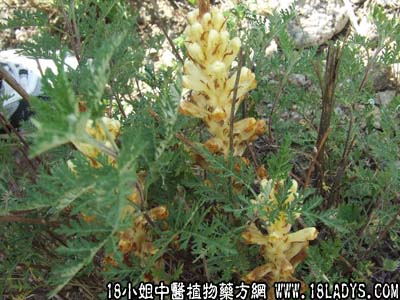

列当(中草药名称:列当)(科目:列当科)

【中药概述】
列当为列当科植物紫花列当或黄花列当的全草。甘，苦，温。归肾经。
1．补肾助阳：适用于肾虚阳痿，遗精，滑精，腰膝冷痛，耳鸣等，有强筋壮骨之效。
2．腹痛腹泻：用于肠炎，腹泻等症（紫花列当有此功效）。
【药效鉴别】
列当功效同肉苁蓉，但效力较小。体虚腰软等，常配川断、桑寄生等同用。
【临证应用】
治阳痿：取列当50g，酒500g，浸经宿，饮之。
【化学成分】
本品含列当甙。
【用量用法】
本品8——10g，水煎服，或浸酒（可稍大剂量）。
【注注注注】
①黄花列当：补肾强筋，温中扶阳。治肾虚腰痛、腰膝冷痛、阳痿、遗精、子宫寒冷、久不受孕、遗尿、久泻；②紫花列当：甘，温。归脾、胃、大肠、肾、膀胱经。温肾壮阳，健脾止泻。治阳痿、肾寒腰痛、肠炎、腹泻。
【附】草苁蓉
（为列当科草苁蓉植物草苁蓉的全草）。甘，咸，温。归脾、肾、大肠经。肾虚阳痿，腰膝冷痛，脾虚中寒，肠燥便秘。腰痛、虚性便秘等。6～18g，水煎服。
【临证应用】
老人便秘、习惯性便秘、产后大便难。草苁蓉，首乌，当归各10g，水煎服，每日1剂，7天为1疗程。
【化学成分】
含草苁蓉醛和草苁蓉内酯。根含甘露醇、生物碱。